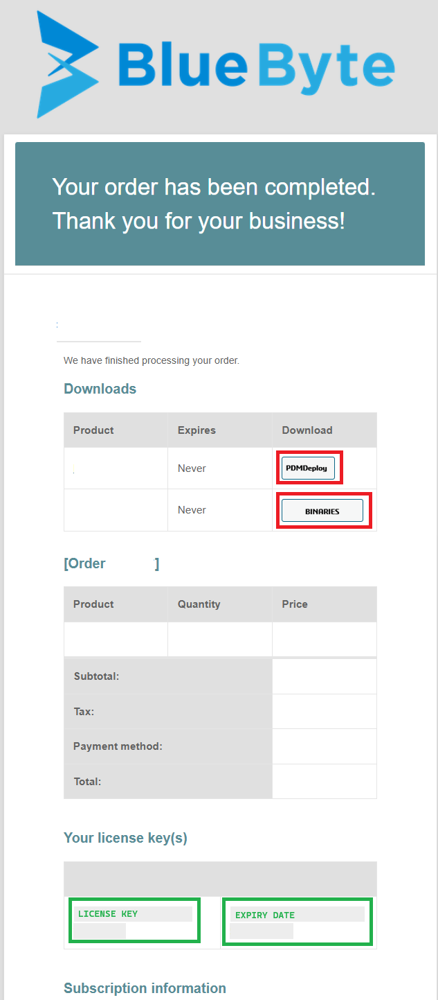

Updating Blue Byte Systems PDM add-ins with CDPDM
This article is about updating any SOLIDWORKS PDM add-in you purchase from Blue Byte Systems Inc using the CDPDM add-in. This tool streamlines the code delivery process for SOLIDWORKS PDM customers by utilizing the CDPDM continuous delivery platform. It allows you to access and update your purchased add-ins and all their versions efficiently.
Installation Steps:
- Download CDPDM: The link is provided in your order email and is also available in the downloads section of your account. This file is an archive zip file and it contains
CDPDM.cexandCustomerConfigurationFile.cfg

Confirmation Email Example
Note
To install CDPDM after downloading it, please follow the instructions in this article.
Warning
If CDPDM fails to install, the order email contains a downloadable CEX file that contains the add-in.
Unblock the downloaded file: Right-click on the zip archive and select Properties. In the properties dialog, check the Unblock option and click OK.
Unzip the archive: Extract the contents of the zip archive.
Open the administration tool: Log into your vault.
Import the add-in:
Go to File > Open and browse to
CDPDM.cex(unzipped content).Click OK to open the CEX file.
Drag and drop the CDPDM add-in icon onto the add-ins node in the administration tool. This will add the add-in into the add-ins node.
Upload the customer configuration file:
Locate the customer configuration file
CustomerConfigurationFile.cfg.If needed unblock the downloaded configuration file: Right-click on the file, select Properties, check the Unblock option, and click OK.
Right-click on the CDPDM add-in and click on Update customer configuration file...
Browse to the unblocked customer configuration file and upload it.
Updating an Add-in:
- Right-click on CDPDM add-in (under Add-ins in the Administration tool):

- Click on Update AddIns… and confirm this dialog box:

- The Add-in View Manager window will appear. This is where you can select from the dropdown list (and check the checkbox) the add-in you'd like to install:

Click on the Install Checked Add-Ins... button to install the selected add-in. The process might take a few moments, so please wait.
You will be prompted at the end to restart your PDM session. This allows your local client to get the new version of the installed add-in. This is optional but highly recommended for tasks that are triggered from File Explorer.
Warnings
Warning
CDPDM does not permit new task add-ins in the Task Host Configuration. You must do that manually:

Warning
All client computers using the add-in's tasks must be restarted to use the new version.